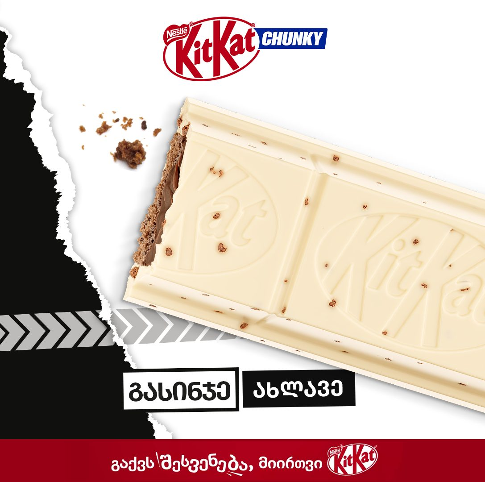

Nestlé
Four brands on one duration table
Nescafé, KitKat, Nesquik and Maggi run on a strict global cutdown ladder — 30″, 15″, 10″, 8″, 6″, each in 16:9, 1:1 and 9:16, each with its own safe zones. The Georgian versions had to land in every one of those slots without losing the frame the master was composed for.
- Role
- Adaptation for the local market: global masters re-cut and re-set to the durations, ratios and safe zones the Georgian channels run.
- Scale
- Key visuals, out of home and film cutdowns for four brands, each landing on the same duration and safe-zone grid the global master was built to.
- Authorship
- Adapted for the local market — durations and safe zones re-cut per channel.
- Years
- 2023–2026
- Volume
- 16 pieces on this page · 9:16 5 · 16:9 5 · 1:1 3 · 4:5 3
- Credit
- Produced at AdsomeFish, Tbilisi. Graphic & Motion Designer: Gedevan Kuprava.
KitKat — Black & White 2


Nesquik — calendar moments 4


Nescafé — Gold Cold, out of home 1

Film and motion 8
The durations and ratios in these captions are the delivery spec, not a description — that ladder is the brief.